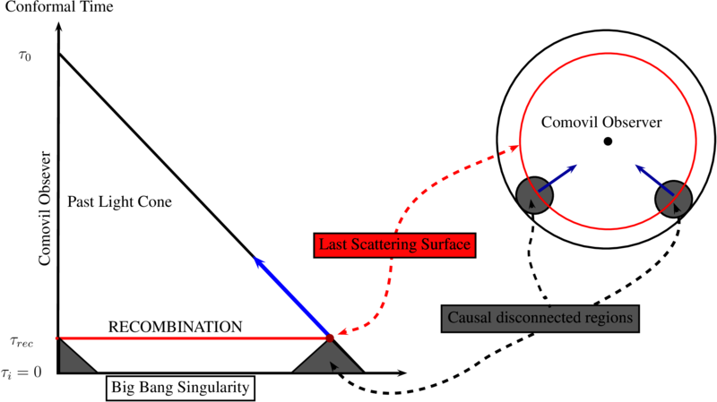

Existen evidencias de que el Universo estaba dominado por radiación durante:
Supongamos que nada especial !
Considere una region de tamaño $l_i \equiv l\left(t_i\right)$ a tiempo $t_i$ que durante la expansión de universo produzca un universo homogéneo e isotrópico de tamaño $l_0\equiv(t_0)$. Así que $l_i=l_0 (a_i/a_0)$ donde $l_0$ de al menos el tamaño de horizonte, $( ct_0\sim 10^{28} cm)$), si comparamos $l_i$ con la region conectada causalmente $l_c \equiv l_c(t_i) \sim ct_i$
$$\frac{l_i}{l_c}\sim \frac{t_0}{t_i} \frac{a_i}{a_0}.$$ Para radiación $\rho \sim T^4$ and $\rho \sim a^{-4}$ entonces $T\sim a^{-1}$ and $T=(a_i/a)T_i $, además $t_i\sim t_{Pl}$ con temperatura$T_{Pl}\sim10^{32} K$, entonces $a_i/a_0\sim T_0/T_{Pl}\sim 10^{-32}$,
$ \boxed{\frac{V_i}{V_c} \sim \left(\frac{l_i}{l_c}\right)^3 \sim \left( \frac{10^{17}}{10^{-43}}10^{-32} \right)^3 \sim \left(10^{28}\right)^3 \sim 10^{84}}$
COLUMN2
\begin{eqnarray} \rho(x,t) &=& \frac{1}{2} \dot{\phi}^2 + \frac{1}{2} (\nabla \phi )^2 + V(\phi) \\ p(x,t) &=& \frac{1}{2} \dot{\phi}^2 - \frac{1}{6} (\nabla \phi )^2 - V(\phi), \end{eqnarray}
\begin{equation} V=\frac{1}{2}m^2 \phi^2 \end{equation}
\begin{equation} V=\frac{1}{2}m^2 \phi^2 \end{equation}
\begin{eqnarray} &&\ddot{\phi} + 3 H \dot{\phi} + m^2 \phi = 0 \\ &&\dot{H} + H^2 = - \frac{1}{6 M_{pl}^2} \left(\rho + 3 p \right) = \frac{1}{6}\frac{m^2\phi^2}{M^2} - \frac{\dot{\phi}}{3M^2}\\ &&H^2 = \frac{1}{6 M^2} \left(m^2\phi^2+ \dot{\phi}^2\right), \end{eqnarray}
\begin{eqnarray} x \equiv \frac{m\phi}{3s}; \\\\ y \equiv \frac{\dot{\phi}}{3s}; \\\\ z \equiv \frac{H}{m}, \\\\ \end{eqnarray} where $s \equiv \sqrt{\frac{2}{3}} M_{pl} m$ and the time variable is $\eta=mt$
\begin{eqnarray} && x^\prime = y; \label{eq:dynamic_x}\\\\ && y^\prime = -x -3yz; \label{eq:dynamic_y}\\\\ && z^\prime = x^2 -2y^2 -z^2; \label{eq:dynamic_z}\\\\ && x^2 +y^2 = z^2. \label{eq:dynamic_constriction} \end{eqnarray} \begin{eqnarray} \rho & = & \frac{9}{2} s^2 z^2,\\ p & = & \frac{9}{2} s^2 \left(y^2 -x^2\right),\\ w & = & \frac{p}{\rho}= \frac{y^2 - x^2}{z^2}, \end{eqnarray}
\begin{equation} \frac{dy}{dx} = \frac{-x -3yz}{y} = - \frac{x+ 3 y \left(x^2 + y^2\right)^{1/2}}{y} \end{equation}
$|y| \gg x$ limit. In this case $w=1$, a fluid with this state equation is known as \textbf{stiff fluid}. \begin{equation} \frac{dy}{dx} = 3 y \quad \Rightarrow y = C e^{3x} \quad \left(C<0\right), \end{equation} then the $\rho \approx p$ state is an exponentially unstable phase and the universe will abandon this stiff state rapidly. we obtain \begin{eqnarray} && x= - \frac{1}{3}\ln \eta + C_1,\\ && z=C \frac{1}{\eta} + C_2 \quad \Rightarrow \quad H\propto t^{-1}. \end{eqnarray}
we consider an horizontal trajectory, this is \begin{equation} \frac{dy}{dx}= -\frac{x + 3yz}{y} \approx 0 \quad \Rightarrow \quad y_{atr} \approx - \frac{x}{3 \left(x^2 + y^2\right)^{1/2}}, \end{equation} where the points included in the line $(x,y_{atr})$ define an attractor as a subset of the phase space. In the limit $\abs{x} \gg y$ we have \begin{equation} \boxed{y_{atr} \approx -\frac{1}{3},} \qquad \boxed{\dot{\phi}_{atr} \approx -s = -\sqrt{\frac{2}{3}} M_{pl} m.} \end{equation} By a similar analysis we can obtain the attractor $y_{atr} \approx +\frac{1}{3}$ in the quadrant II of the x-y subspace. After a solution joins to the attractor, the pressure and state equation are \begin{equation} p \simeq -\rho + s^2 \qquad w = -1 + \frac{s^2}{\rho} \approx -1 + \frac{2}{9x^2} \approx -1. \end{equation} This is an indication that this attractor is related with an inflationary phase.
Now we can obtain the slow roll parameters for the $V\sim m^2\phi^2$ \begin{eqnarray} \epsilon \left(\phi\right)\equiv \frac{M_{pl}^2}{2} \left(\frac{V^\prime}{V}\right)^2 = \frac{ M_{pl}^2}{2} \left( \frac{\partial V}{\partial \phi} \frac{1}{V}\right)^2 = 2 \left( \frac{ M_{pl}^2 }{ \phi } \right)^2 \\ \eta \left(\phi\right) \equiv M_{pl}^2 \frac{V^{\prime \prime}}{V} = M_{pl}^2 \frac{\partial^2 V}{\partial \phi^2} \frac{1}{V} = 2 \left( \frac{ M_{pl}^2 }{ \phi } \right)^2, \end{eqnarray} This expressions can be rewritten in terms of the dynamical system as \begin{equation} \epsilon(x)=\eta(x) = \frac{1}{3x^2} \end{equation} Here we define the end of inflation $x_{end}$ or $\phi_{end}$ when $\eta,\epsilon=1$, this are \begin{eqnarray} && x_{end} = \pm \sqrt{ \frac{1}{3}}\\ && \phi_{end} = \pm \sqrt{ 2} M_{pl} \end{eqnarray} where ''+" and ''-'' signs applies for IV and II attractors, respectively.